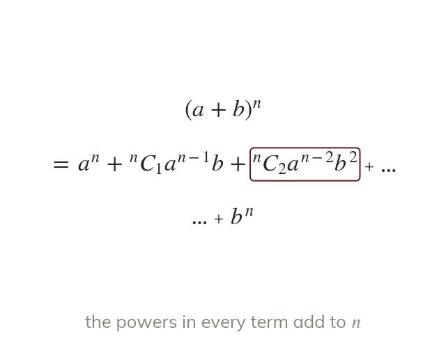
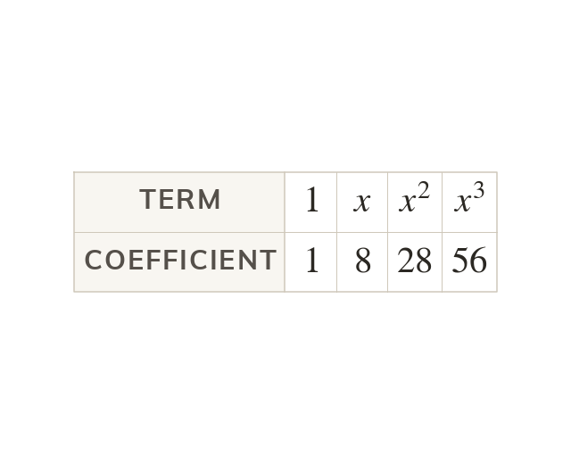
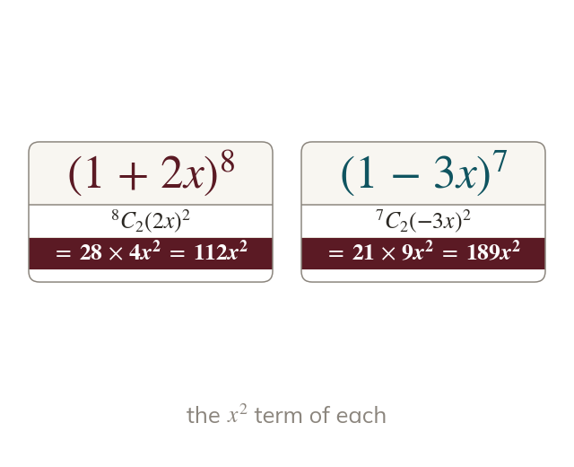
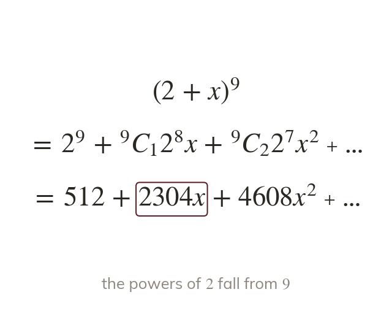
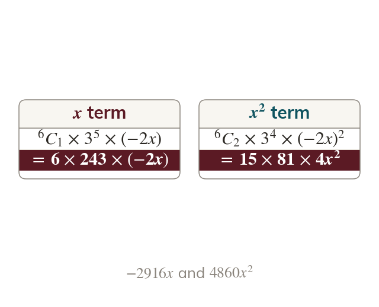
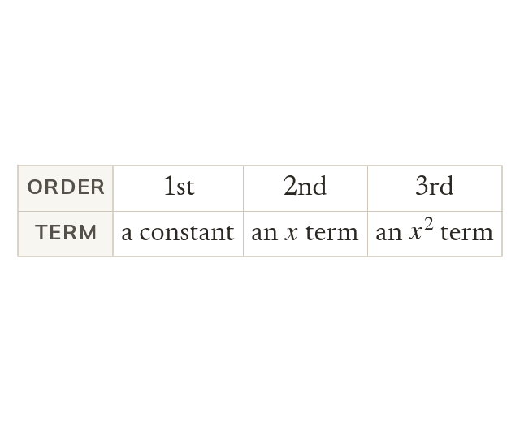

The expansion
Each coefficient of is a choose number, starting with
The power of a falls from as the power of rises from
Pascal's triangle runs out of room for a power such as but nCr gives each coefficient directly. The binomial expansion writes any term by term, and the next lessons use one of its terms at a time to find coefficients and estimates.
Work down the page at your own pace. Write every answer in your book first, then click to check it.
Read each card, then follow the worked examples one step at a time.

Each coefficient of is a choose number, starting with
The power of a falls from as the power of rises from

Every power of is so only the choose numbers and the powers of are left. The term of is

A term such as or is raised to the power as a whole. The bracket carries both the number and the sign.
Pick an answer. If it's wrong, the feedback tells you which mistake it was.
Write the blanks in your book first, then tap each one to check.
Read each card, then follow the worked examples one step at a time.

A first term such as is raised to a falling power in each term. So the powers of fall as the powers of rise.

With the and the are each raised to a power. Work out each power before multiplying.

Ascending powers of means the constant first, then then and so on. The first three terms are the constant, the term and the term.
Pick an answer. If it's wrong, the feedback tells you which mistake it was.
Write the blanks in your book first, then tap each one to check.
Finished? Next lesson: 12.P8.4 Solving Binomial Problems.
For each skill, tap the one that is true for you today. Your Revise pages start with anything you mark Not yet.
Your ratings are saved on this device only.
Log in, then search for a code to practise that skill.